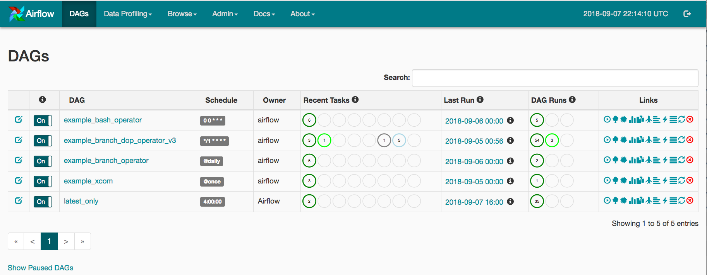

Full Stack Developer
When a critical software package your team uses 1) is open source and 2) isn't working quite the way you want or expect it to, patch it so it does! Your team will be more productive and you'll get more familiarity with how it works, which could pay dividends down the line. It may also signal the depth of your skills (wink, nudge).
One of my responsibilities at work is to help my fellow data engineers be more efficient at their work building and maintaining ETL pipelines. The tool we use for this is Apache Airflow, which enables us to define and schedule pipelines. When a pipeline has been created, it appears on a list of "DAGs" (directed acyclic graphs) like this:
In our group this list is significantly longer, long enough to paginate (100 DAGs per page by default in Airflow), and some of them are switched to "off" (that first column).
If you see that bright green circle under "DAG Runs" for
example_branch_dop_operator_v3, that indicates there are three copies
of that DAG running at this moment. Imagine that you're interested in finding and expanding on a
running DAG among a list of hundreds: It means either manually perusing multiple pages of DAGs
looking for those bright green circles or doing a search. For our team the chances that what you've
come to the Airflow GUI looking for is, indeed, a currently running DAG.
This is where we dive into the Airflow code base. I very naughtily did this, as well as the ensuing
changes, in the site-packages/airflow directory on our live Airflow webserver.
Sorry/not sorry!
Firstly, I right-clicked on one of those bright green "running DAG" circles and did "inspect
element". This led me eventually to some jQuery which renders the color and number for each of the
three circles in a DAG's "DAG Runs", each based on a Javascript object with keys like "state" and
"count". This object is obtained via a fetch to Airflow's back end, namely an endpoint
called /dag_stats.
We'll want to sort our DAGs by something in the response to that fetch call. However,
the /dag_stats endpoint is called after the DAG list page is
loaded, so we'll have to do a little surgery:
First let's find this endpoint in Airflow's code base: $ grep -r dag_stats airflow/ leads
us
here.
payload near the end of that function looks to be a dictionary whose keys are
dag_ids and whose values are lists of dictionaries, each dictionary containing (among other
things) the "state", "count", and "color" for each of the possible DAG states. We know there are
three possible DAG states given the three circles in the GUI.
So, how to get that DAG status dictionary before rendering all the DAGs so we can sort by it? Well, that
jQuery I tracked down earlier is in a template file called
dags.html. Whatever endpoint renders
that template is what we're after. Sure enough, in the same views.py module as
/dag_stats we have
this (the "/" endpoint). In it there's a complex, parametrized-via-config
SQLAlchemy query to get and filter and sort the DAGs that will be passed into the template. In lieu
of adding a complex (though surely more efficient) multi-table query in the body of this endpoint,
let's just copy all the code from the /dag_stats endpoint and sort the DAGs by
it just before rendering:
dags = sorted(dags, key=lambda dag: (-payload[dag.dag_id][1]['count'], dag.dag_id))
That [1] index is the "running" state dictionary, as surmised (speculated!) by the
order in which it appears on the GUI.
This code change -- a single line plus some re-purposing of existing code -- causes all running DAGs to be listed first!
This is a weird one: For some reason Airflow shows the last execution_date in the "Last
Run" column, and if you want to know the actual last run date/time you have to hover over
that little "info" span next to the date/time displayed there. In our team's case this causes many,
if not most, DAGs to show a "last run" date that's 24 hours earlier than the truth. This leads to a
lot of head-scratching and unnecessary attempts at debugging (DAG code, the Airflow scheduler, etc.)
-- a poor user experience, and a waste of time!
Let's swap these values, shall we? Searching through
dags.html
we see a nicely commented table cell for "Last Run": our target. last_run.start_date
and last_run.execution_date look to be the two values we want to swap, in addition to
their swapping their labels.
This solves it! The actual last run date displays, as we all expected to happen in the first place.
The way DAGs are schedule is by supplying a CRON string to the argument
schedule_interval. The way the Airflow GUI displays a DAG's schedule is by simply
rendering the CRON string. However, not everyone "speaks CRON" on our team -- I'm one of those
people, I have to Google these strings pretty much every time. What's more, I can imagine a scenario
where a non-engineer peeks in at the DAGs and would gather exactly nothing from, say, 0 0 * *
*.
Surely there's some human-friendlier way to render these? A quick Google search yields
Cron Descriptor
, "a Python library that converts cron expressions into human readable strings." If we plunk
that into our environment and import it (from cron_descriptor import get_description), we've nearly reached a readable solution:
def convert_schedule_to_natural_language(cronstring):
if dag.schedule_interval and not dag.schedule_interval.startswith('@'):
try:
dag.schedule_interval = get_description(dag.schedule_interval)
except cron_descriptor.Exception.FormatException:
pass
return dag
...
dags = [convert_schedule_to_natural_language(dag) for dag in dags]
...
return self.render(...
Since @hourly and such are already human-readable, we leave those alone. We then
convert the schedule_interval of every DAG before rendering it. As a result, the
first two intervals from the above screenshot are translated into 'At 00:00 AM' and 'Every minute',
respectively. A little weird, but more or less readable!
All told, these changes took about 75 minutes, including finding the package for translating CRON strings into natural language. My estimate is that we'll earn those 75 minutes back across the team in the next 48 hours. After that, it's all increased-team-productivity gravy. My advice:
1) Whenever you spot an opportunity like this in a tool that more than a few people use regularly, and
2) it will take an afternoon or less to augment,
It's a golden opportunity; take it!